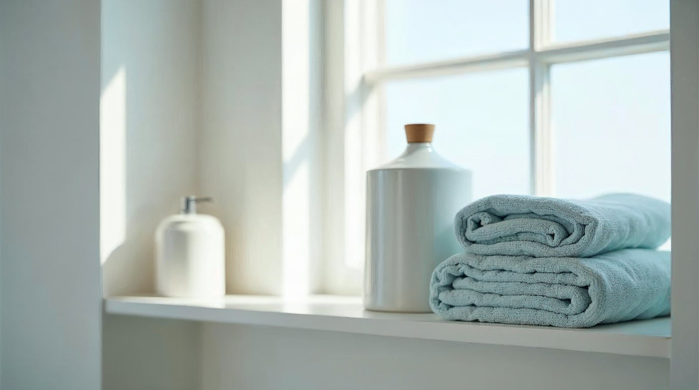
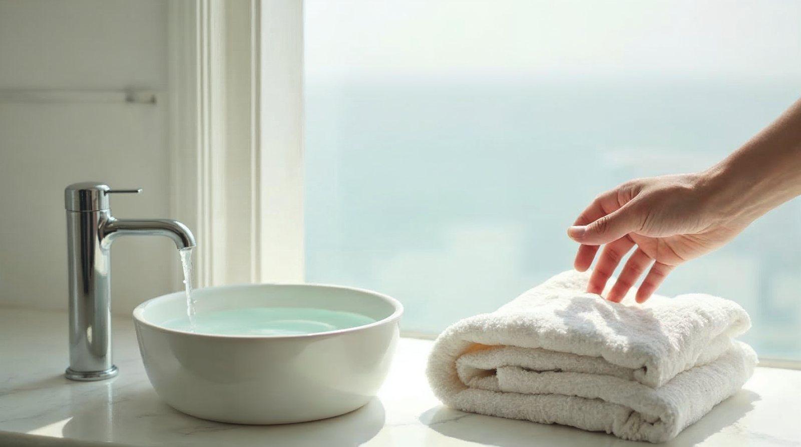
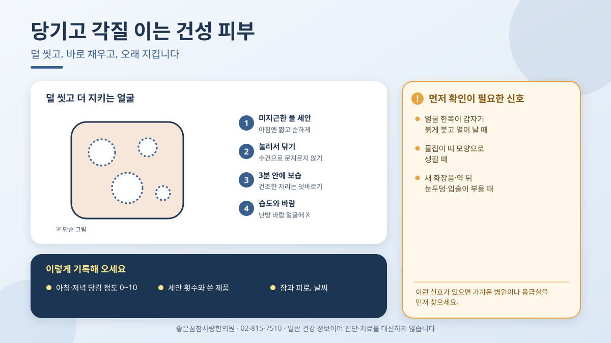

이종호 한의사 감수좋은꿈참사랑한의원 대표원장 (한의사 면허번호 19769)발행 2026-11-26 · 수정 2026-11-26
이 글의 차례
아침에 세수를 하고 수건으로 얼굴을 닦는 순간부터 볼이 땅기기 시작합니다. 서둘러 로션을 바르고 화장을 하면, 점심 무렵에는 입가와 코 옆이 하얗게 들떠 있습니다. 거울을 볼 때마다 각질이 눈에 걸려 손으로 문지르게 되고, 문지른 자리는 또 붉어집니다.
진료실에서 맥을 짚으며 얼굴빛을 살피다 보면 볼과 눈가가 유난히 거칠어 보이는 분이 계십니다. 여쭈어 보면 "원래 건성이라서요"라고 대답하시는 경우가 많습니다. 그런데 이야기를 이어 가다 보면 세안 습관, 잠, 난방, 물 마시는 양처럼 피부를 더 마르게 만드는 생활이 함께 보이곤 합니다.
건성 피부는 타고나는 면도 있지만, 계절과 나이, 생활에 따라 더 심해지거나 덜해집니다. 원래 피부가 괜찮던 분이 어느 겨울부터 갑자기 얼굴이 당기기 시작했다고 말씀하시기도 합니다. 그래서 얼굴 피부만 보지 않고 하루의 흐름을 함께 들여다보게 됩니다.
이 글에서는 건성 피부가 어떤 모습인지, 왜 얼굴이 마르는지, 비슷해 보이는 다른 얼굴 피부 문제와 어떻게 다른지, 그리고 진료실에서 무엇을 여쭙고 생활에서 무엇을 해 볼 수 있는지를 차례로 정리했습니다.
건성 피부는 어떤 모습인가요
가장 흔한 느낌은 '당김'입니다. 세안 직후 몇 분 안에 볼과 이마가 팽팽하게 당기고, 웃거나 말할 때 입가가 뻣뻣하게 느껴집니다. 손으로 만져 보면 매끈하기보다 까슬까슬하고, 빛을 비춰 보면 고운 비늘처럼 하얀 각질이 일어나 있습니다.
화장이 잘 받지 않는 것도 흔한 모습입니다. 파운데이션이 각질 위에 얹혀 들뜨거나, 시간이 지나면 잔주름을 따라 갈라져 보입니다. 볼과 눈 밑, 입 주변처럼 피지가 적은 자리가 먼저 마르고, 이마와 코는 상대적으로 덜 마르는 경우가 많습니다.
건조가 심해지면 가려움과 따가움이 함께 생깁니다. 평소 쓰던 화장품이 갑자기 따갑게 느껴지거나, 찬 바람을 맞은 뒤 볼이 붉게 달아오르기도 합니다. 피부를 지키는 겉층이 얇아져 작은 자극에도 예민하게 반응하는 상태라고 생각해 주시면 됩니다. 입술이 함께 트고 갈라지는 분도 많습니다.
왜 얼굴이 마르고 당길까요
피부 가장 바깥에는 벽돌처럼 쌓인 각질층과, 그 사이를 메우는 기름 성분이 있어서 수분이 빠져나가지 않도록 막아 줍니다. 이 벽이 얇아지거나 틈이 생기면 속의 수분이 쉽게 날아가 피부가 당기고 각질이 들뜹니다. 건성 피부는 이 벽이 약해진 상태입니다.
벽을 약하게 만드는 가장 흔한 이유는 세안입니다. 뜨거운 물로 자주 씻거나, 세정력이 강한 세안제로 뽀득할 때까지 씻으면 피부를 지키는 기름까지 씻겨 나갑니다. 각질 제거제나 필링을 자주 하는 것, 수건으로 세게 문지르는 것도 벽에 틈을 냅니다.
환경도 큰 몫을 합니다. 겨울의 찬 바람과 건조한 공기, 난방과 에어컨, 오래 쓰는 마스크 안의 습기와 마찰이 피부를 번갈아 자극합니다. 나이가 들면 피지와 피부 속 보습 성분이 줄어들고, 갱년기 무렵에는 눈과 입, 피부가 함께 건조해진다고 말씀하시는 분이 많습니다.
잠이 부족하고 피로가 쌓일 때, 물을 적게 드실 때, 식사가 한쪽으로 치우칠 때도 피부가 거칠어졌다고 느끼시곤 합니다. 갑상선 기능이 떨어지거나 피부를 마르게 하는 약을 드실 때도 건조가 심해질 수 있어 함께 살펴봅니다.
한의학에서는 몸의 진액이 부족하거나 혈이 넉넉하지 않아 피부를 충분히 적셔 주지 못하는 모습으로 설명해 왔습니다. 이것은 진단명이 아니라, 진찰할 때 입마름과 잠, 피로, 생리의 흐름을 함께 살피기 위한 전통적인 표현으로 이해해 주시면 됩니다.
비슷한 얼굴 피부 문제와는 어떻게 다른가요
얼굴에 각질이 일고 붉어지는 것은 단순한 건조만이 아닐 수 있습니다. 나란히 놓아 보면 구분하는 데 도움이 됩니다.
- 지루성 피부염: 코 옆, 눈썹, 이마처럼 기름이 많은 자리에 누렇고 기름진 각질과 붉은기가 생깁니다. 건성 피부는 오히려 볼과 입가처럼 기름이 적은 자리가 먼저 마릅니다.
- 안면홍조와 주사: 볼과 코가 쉽게 붉어지고 화끈거리며, 작은 혈관이 비쳐 보이거나 뾰루지가 함께 올라옵니다. 각질보다 붉은기와 열감이 중심입니다.
- 접촉피부염: 새로 바꾼 화장품이나 염색약이 닿은 자리에 붉은기와 가려움, 작은 물집이 생깁니다. 닿은 자리와 모양이 일치하는 것이 특징입니다.
- 아토피 피부염: 얼굴뿐 아니라 목, 팔 접히는 곳에도 가려운 습진이 반복되고, 어릴 때부터 이어진 경우가 많습니다.
건성 피부는 '기름이 적은 자리부터' '당기고 고운 각질이 이며' '보습을 하면 한결 편해지는' 것이 특징입니다. 보습을 꾸준히 해도 붉은기와 가려움이 심해진다면 피부과에서 다른 원인을 확인해 보세요.
건성 피부를 두고 자주 헷갈리는 것
첫째, 각질이 보이면 벗겨 내야 한다는 생각입니다. 들뜬 각질을 스크럽이나 필링으로 자주 벗겨 내면 그 순간은 매끈해 보여도, 피부를 지키는 벽이 더 얇아져 금방 다시 당깁니다. 각질은 벗겨 내기보다 보습으로 눌러 주는 쪽이 피부에 부담이 적습니다.
둘째, 물을 많이 마시기만 하면 된다는 생각입니다. 물을 충분히 드시는 것은 도움이 되지만, 피부 겉의 벽이 약하면 마신 물도 쉽게 날아갑니다. 마시는 물과 함께 바르는 보습, 덜 씻는 습관이 같이 가야 합니다.
셋째, 건성이니 무거운 크림을 아주 두껍게 발라야 한다는 생각입니다. 사람에 따라 너무 무거운 제품이 뾰루지를 만들기도 합니다. 얇게 여러 번 겹쳐 바르고, 건조한 자리에만 조금 더 덧바르는 방식이 편하다고 말씀하시는 분이 많습니다.
생활의 시기에 따라 달라지는 얼굴
겨울에는 바깥의 찬 바람과 실내의 난방 사이를 오가며 피부가 하루에도 여러 번 온도와 습도의 차이를 겪습니다. 이 차이가 클수록 피부가 당기고 붉어지기 쉬워서, 겨울만 되면 건성 피부가 심해진다고 말씀하시는 분이 많습니다.
마스크를 오래 쓰는 날에는 마스크 안이 습했다가 벗는 순간 급하게 마르고, 마스크 끈과 테두리가 닿는 자리에 마찰이 더해집니다. 그래서 콧등과 볼, 턱선에만 유난히 각질이 일기도 합니다. 출산 뒤나 갱년기 무렵, 잠이 부족한 시기에 갑자기 얼굴이 마르기 시작했다는 분도 계십니다.
남성분들은 면도가 큰 몫을 하기도 합니다. 날이 무딘 면도기로 여러 번 밀거나, 면도 뒤 바로 알코올이 든 스킨을 바르면 턱과 볼이 쉽게 따갑고 마릅니다. 면도 전에 따뜻한 물로 수염을 충분히 불리고, 면도 뒤에는 순한 보습제로 마무리해 주세요.
먼저 이렇게 여쭙니다
처음 오시면 저는 대략 이런 순서로 여쭙니다. 미리 생각해 오시면 이야기가 수월해집니다.
- 얼굴이 당기기 시작한 것은 언제부터이고, 계절에 따라 달라지나요?
- 하루 몇 번, 어떤 물 온도와 세안제로 세수하시나요?
- 각질 제거제, 필링, 레티놀이나 산 성분 화장품을 쓰시나요?
- 가려움, 따가움, 붉은기가 함께 있나요?
- 눈이나 입이 함께 마르고, 물은 하루에 얼마나 드시나요?
- 잠드는 시각과 잠의 깊이, 요즘의 피로는 어떤가요?
드시는 약과 영양제, 최근 바꾼 화장품, 실내 습도와 난방 습관도 함께 여쭙습니다. 얼굴의 건조함은 하루의 생활이 겹쳐서 만들어지는 경우가 많아서, 작은 습관 하나가 실마리가 되곤 합니다.
일상에서 먼저 해 볼 수 있는 것
건성 피부 관리는 '덜 씻고, 바로 채우고, 오래 지키는' 순서로 생각하시면 쉽습니다. 아래 습관 가운데 지금 할 수 있는 것부터 하나씩 해 보세요.
- 세안은 미지근한 물로, 아침에는 물 세안이나 순한 세안제로 짧게 하기
- 수건은 문지르지 말고 얼굴에 가볍게 눌러 물기만 닦기
- 세안 뒤 3분 안에 보습제를 바르고, 건조한 자리는 한 번 더 덧바르기
- 각질 제거제와 필링은 횟수를 줄이고, 자극이 될 수 있는 제품은 잠시 쉬기
- 실내 습도를 조금 올리고, 난방기나 에어컨 바람이 얼굴에 직접 닿지 않게 하기
- 외출할 때 목도리나 마스크로 찬 바람이 볼에 직접 닿는 것 줄이기
화장품은 가짓수를 늘리기보다 줄이는 쪽이 도움이 되는 경우가 많습니다. 여러 제품을 겹쳐 쓰다 보면 어떤 것이 자극이 되는지 알기 어렵습니다. 순한 세안제 하나, 보습제 하나, 자외선 차단제 하나로 단순하게 맞춘 뒤 피부의 반응을 지켜보세요.
몸 안쪽의 습관도 함께 챙겨 주세요. 물을 한 번에 많이 드시기보다 조금씩 자주 드시고, 잠드는 시각을 일정하게 맞추는 것만으로도 아침 얼굴이 덜 당긴다고 말씀하시는 분이 많습니다. 끼니를 거르지 않고 생선, 견과류, 콩처럼 좋은 기름이 든 음식을 고루 드시는 것도 도움이 됩니다.

병원 진료와는 어떻게 함께 가나요
붉은기와 가려움이 심하거나, 보습을 꾸준히 해도 각질이 줄지 않는다면 피부과에서 지루성 피부염, 주사, 접촉피부염 같은 다른 원인이 없는지 확인해 보세요. 처방받은 연고는 처방한 선생님의 안내대로 쓰시고, 좋아졌다고 혼자 늘리거나 멈추지 않으시는 것이 좋습니다.
한의원 진료는 이런 진료를 대신하는 것이 아니라 나란히 갑니다. 병원에서 피부의 원인을 챙기고, 한의원에서는 잠과 피로, 입마름, 생리와 갱년기의 흐름처럼 얼굴의 건조와 함께 움직이는 몸 전체를 살핀다고 생각해 주시면 됩니다.
한의원에서 함께 살필 수 있는 경우
- 얼굴과 함께 눈, 입, 손발까지 전체적으로 건조해진 경우
- 갱년기 무렵이나 출산 뒤 피부가 갑자기 마르고 잠이 얕아진 경우
- 잠이 부족하고 피로가 쌓일 때마다 얼굴이 거칠어지고 당기는 경우
- 얼굴로 열이 오르면서 볼이 붉고 마르는 일이 반복되는 경우
좋은꿈참사랑한의원에 오시면 먼저 아래 '먼저 확인이 필요한' 신호가 없는지부터 봅니다. 그다음 맥을 짚고, 얼굴빛과 피부결, 혀의 모습을 살피며 잠과 소화, 물 마시는 양, 생리의 흐름을 여쭙습니다.
진찰한 내용을 바탕으로 생활에서 바꿔 볼 것 하나와 함께 침, 한약 상담 가운데 지금 상태에 맞는 것을 정합니다. 한약을 상의할 때는 드시는 약을 모두 확인한 뒤 신중하게 정하고, 임신 중이시거나 임신 가능성이 있다면 먼저 알려 주시고 산부인과와도 상의해 주세요.
이렇게 기록해 오시면 상담이 쉬워집니다
얼굴의 건조함은 날마다 조금씩 달라서 기록이 큰 도움이 됩니다. 2주 정도만 간단히 적어 보세요.
- 아침과 저녁 얼굴이 당기는 정도를 0에서 10까지 숫자로
- 세안 횟수와 물 온도, 쓴 세안제
- 바른 화장품과 새로 바꾼 제품
- 잠든 시각과 깬 시각, 그날의 피로
- 실내 습도와 바깥 날씨, 마스크를 쓴 시간
- 붉은기나 가려움이 심했던 날과 그 무렵 한 일
기록을 보면 어떤 세안, 어떤 제품, 어떤 날씨에서 얼굴이 더 당기는지가 드러납니다. 원인이 보이면 줄일 것과 더할 것이 분명해집니다. 아침 세안 직후와 오후에 얼굴을 한 번씩 사진으로 남겨 두시면, 숫자로 적은 당김 정도와 함께 보며 변화를 알아보기가 훨씬 쉬워집니다.

덜 씻고 더 지키는 얼굴
건성 피부는 깨끗하게 하려는 마음이 오히려 피부를 마르게 하는 경우가 많습니다. 뽀득한 세안보다 촉촉한 세안, 여러 제품보다 단순한 보습, 문지르기보다 눌러 주기를 기억해 주세요. 작은 순서만 바꿔도 아침 얼굴이 한결 편해질 수 있습니다.
자외선도 피부의 벽을 약하게 만드는 이유 가운데 하나라서, 흐린 겨울날에도 자외선 차단제를 바르시길 권합니다. 보습제를 바른 뒤 마지막에 얇게 덧바르시면 됩니다.
이번 주에는 세안 뒤 3분 안에 보습제를 바르는 것 하나만 지켜 보세요. 다음에 오시면 그 주의 기록을 함께 펼쳐 놓고 다음 걸음을 정하겠습니다.
이런 증상은 먼저 확인이 필요합니다
- 얼굴 한쪽이 갑자기 붉게 부어오르고 화끈거리며 열이 나거나 물집이 띠 모양으로 생기는 경우
- 새 화장품이나 약을 쓴 뒤 눈두덩과 입술이 붓고 숨쉬기가 답답한 경우
이런 신호가 있으면 한의원보다 가까운 병원이나 응급실을 먼저 찾으세요.
함께 읽으면 좋은 글
- 코 옆과 눈썹이 붉고 각질이 일어나는 얼굴 지루성 피부염은 어떻게 살피나요?
- 얼굴이 쉽게 붉어지고 화끈거리는 안면홍조와 주사(딸기코)는 어떻게 살피나요?
- 겨울 찬바람을 맞고 들어오면 볼이 빨갛게 달아오르고 따가울 때는 어떻게 살피나요?
- 갱년기 무렵 눈·입·피부가 부쩍 건조해졌을 때는 무엇을 살피나요?
- 잠이 부족하면 피부가 푸석하고 트러블이 나는 이유는 무엇인가요?

여쭙는 것
- 얼굴이 당기기 시작한 것은 언제부터이고, 계절에 따라 달라지나요?
- 하루 몇 번, 어떤 물 온도와 세안제로 세수하시나요?
- 각질 제거제, 필링, 레티놀이나 산 성분 화장품을 쓰시나요?
생활에서 해 볼 것
- 세안은 미지근한 물로, 아침에는 물 세안이나 순한 세안제로 짧게 하기
- 수건은 문지르지 말고 얼굴에 가볍게 눌러 물기만 닦기
- 세안 뒤 3분 안에 보습제를 바르고, 건조한 자리는 한 번 더 덧바르기
한의원에서 함께 살필 것
- 얼굴과 함께 눈, 입, 손발까지 전체적으로 건조해진 경우
- 갱년기 무렵이나 출산 뒤 피부가 갑자기 마르고 잠이 얕아진 경우
- 잠이 부족하고 피로가 쌓일 때마다 얼굴이 거칠어지고 당기는 경우
먼저 확인이 필요한 신호
- 얼굴 한쪽이 갑자기 붉게 부어오르고 화끈거리며 열이 나거나 물집이 띠 모양으로 생기…
- 새 화장품이나 약을 쓴 뒤 눈두덩과 입술이 붓고 숨쉬기가 답답한 경우
한눈에 보는 표
| 구분 | 핵심 |
|---|---|
| 여쭙는 것 | 얼굴이 당기기 시작한 것은 언제부터이고, 계절에 따라 달라지나요? 하루 몇 번, 어떤 물 온도와 세안제로 세수하시나요? |
| 생활에서 해 볼 것 | 세안은 미지근한 물로, 아침에는 물 세안이나 순한 세안제로 짧게 하기 수건은 문지르지 말고 얼굴에 가볍게 눌러 물기만 닦기 |
| 한의원에서 함께 살필 것 | 얼굴과 함께 눈, 입, 손발까지 전체적으로 건조해진 경우 갱년기 무렵이나 출산 뒤 피부가 갑자기 마르고 잠이 얕아진 경우 |
| 먼저 확인이 필요한 신호 | 얼굴 한쪽이 갑자기 붉게 부어오르고 화끈거리며 열이 나거나 물집이 띠 모양으로 생기는 경우 새 화장품이나 약을 쓴 뒤 눈두덩과 입술이 붓고 숨쉬기가 답답한 경우 |
자주 묻는 질문
건성 피부는 하루에 몇 번 세수하는 것이 좋은가요?
아침에는 미지근한 물이나 순한 세안제로 가볍게, 저녁에는 화장과 먼지를 지우는 정도로 하루 두 번이면 충분한 경우가 많습니다. 세안 뒤에는 바로 보습제를 발라 주세요.
각질이 일어나면 스크럽으로 벗겨 내도 되나요?
자주 벗겨 내면 피부를 지키는 벽이 더 얇아질 수 있습니다. 들뜬 각질은 보습제로 눌러 주시고, 각질 제거는 횟수를 크게 줄이시길 권합니다.
물을 많이 마시면 얼굴 건조가 좋아지나요?
물을 조금씩 자주 드시는 것은 도움이 되지만, 그것만으로는 부족한 경우가 많습니다. 덜 씻는 습관과 세안 뒤 보습, 실내 습도 관리를 함께 챙겨 주세요.
여드름 약을 먹으면서 얼굴이 많이 마르는데 어떻게 하나요?
일부 여드름 약은 피부와 입술을 마르게 할 수 있습니다. 처방한 선생님께 먼저 알려 주시고, 약은 혼자 멈추지 마세요. 한의원에서는 드시는 약을 확인한 뒤 생활 관리를 함께 살핍니다.
좋은꿈참사랑한의원은 재진 때 지난번 이야기부터 이어서 여쭙니다. 진료시간과 예약은 오시는 길에서 확인하세요.
어디서 상담받을 수 있나요?
좋은꿈참사랑한의원은 서울 동작구 만양로2길 2 신성빌딩 3층·5층(서울 동작구 상도동, 7호선 상도역 3번 출구 근처)에 있습니다. 한의사 3명(이종호 대표원장, 조영기 수석진료원장, 정원영 진료원장)이 진료합니다. 진료시간은 평일 09:30~20:00(점심 13:00~14:00), 토·일·공휴일 09:30~15:00이며, 방문 전 전화로 확인을 권합니다. 예약은 네이버 예약, 카카오톡 상담, 전화 02-815-7510로 받습니다.
이 글은 일반적인 건강 정보이며 개인의 진단이나 치료를 대신하지 않습니다. 증상이 있거나 복용 중인 약이 있다면 진료를 통해 확인하세요. 치료 효과는 개인마다 다를 수 있습니다.
작성 기준: 일반적으로 알려져 있는 건강 정보를 참고해 정리했습니다(대표원장 감수). 증상 기록은 1~2주 동안 하루 1회, 비슷한 시간에 적어 오시면 지난 상태와 비교하기 쉽습니다.